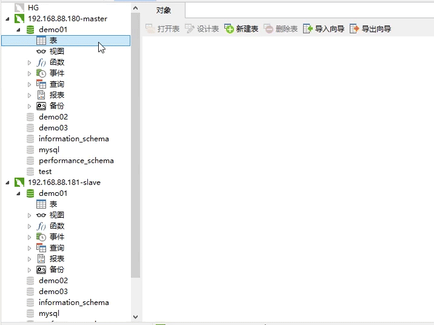
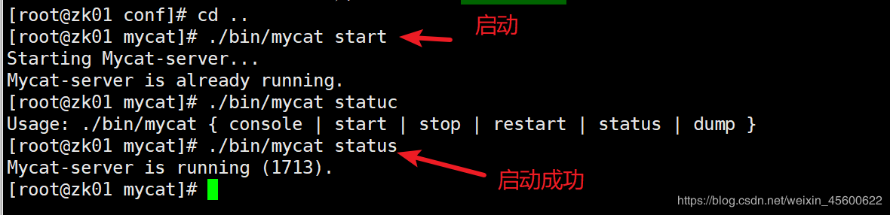
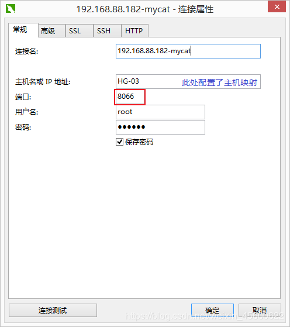
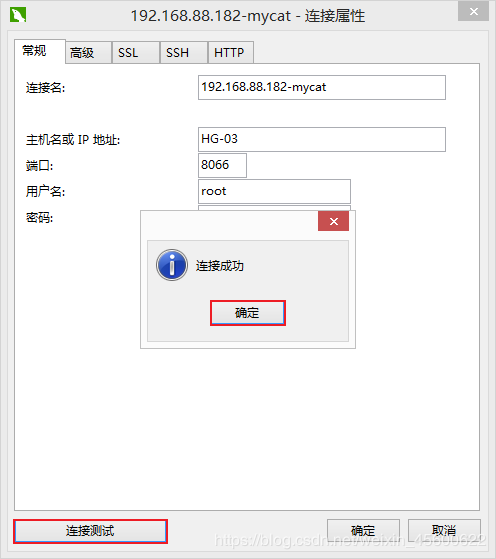
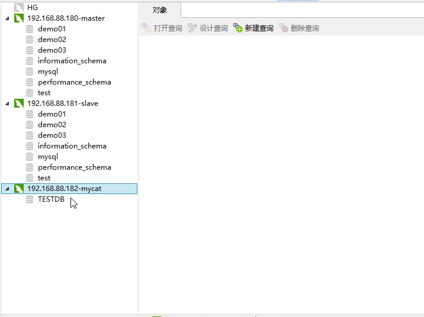
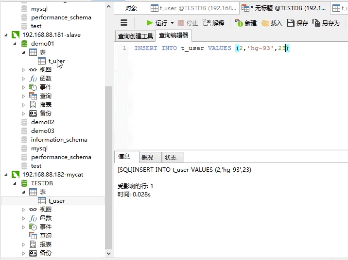

原文出处:本文由博客园博主HG-93提供。
原文连接:https://www.cnblogs.com/cxydmx/p/11734507.html
原文连接:https://www.cnblogs.com/cxydmx/p/11734507.html
本文我们来给大家介绍下通过MyCat来实现MySQL的读写分离操作
MyCat读写分离
一、读写分离配置
前面我们已经介绍过了mysql的主从同步和mycat的安装及相关配置文件的介绍，现在我们来配置下具体的读写分离操作。
1.1 创建物理表
我们现在master库中创建一张t_user表,因为主从的关系，slave中也会同步创建该表。

1.1 schema.xml配置
<?xml version="1.0"?>
<!DOCTYPE mycat:schema SYSTEM "schema.dtd">
<mycat:schema xmlns:mycat="http://io.mycat/">
<schema name="TESTDB" checkSQLschema="false" sqlMaxLimit="100">
<table name="t_user" primaryKey="ID" type="global" dataNode="dn1" />
</schema>
<dataNode name="dn1" dataHost="localhost1" database="demo1" />
<dataHost name="localhost1" maxCon="1000" minCon="10" balance="1"
writeType="0" dbType="mysql" dbDriver="native" switchType="1" slaveThreshold="100">
<heartbeat>select user()</heartbeat>
<writeHost host="hostM1" url="192.168.88.180:3306" user="root"
password="123456">
<readHost host="hostS2" url="192.168.88.181:3306" user="root" password="123456" />
</writeHost>
</dataHost>
</mycat:schema>
注意：
- schema中的name
TESTDB没变 - table中的是逻辑表的名称,所以和物理表同名’t_user’
- dataNode中的database表示的是物理数据库名称
demo1 - balance的值要设置为
1否则查询会读取不到从库的数据 - writeHost中的url表示
写库的地址 - readHost表示配置读库的信息
- user属性对应的应该是
server.xml中配置的账号
| balance的值 | 描述 |
|---|---|
| 0 | 不开启读写分离机制，所有读操作都发送到当前可用的 writeHost 上 |
| 1 | 全部的 readHost 与 stand by writeHost(分库中没有参与写操作的) 参与 select 语句的负载均衡 |
| 2 | 所有读操作都随机的在 writeHost、 readhost 上分发。 |
| 3 | 所有读请求随机的分发到 writeHost 对应的 readhost 执行,writerHost 不负担读压力 |
1.2 server.xml配置
本案例中server.xml文件不需要修改，如果在schema.xml中中将TESTDB修改了那么在server.xml文件中对应的也需要修改
1.3 rule.xml配置
在读写分离中不需要修改rule.xml文件
二、MyCat启动
通过前面的介绍我们已经安装好了MyCat，现在我们先启动MyCat,MyCat的启动脚本位于bin目录下,常用的命令
| 操作 | 命令 |
|---|---|
| 启动 | ./bin/mycat start |
| 停止 | ./bin/mycat stop |
| 重启 | ./bin/mycat restart |
| 查询状态 | ./bin/mycat status |

三、测试读写分离
3.1 客户端连接MyCat
我们可以通过客户端来连接MyCat操作，客户端可以是Navicat或者DataGrip,本文通过Navicat来连接，注意连接的端口为8066


3.2 写数据测试
我们通过mycat连接来执行insert语句，来查看是否会写入到物理库中。

如上，通过对MyCat的逻辑库的写操作，真实的写入到了物理库中。
3.3 读数据测试
接下来我们看下读操作，为了演示读操作，我们直接在slave中手动插入一条数据，这样主库和从库中的数据就不一样了，这时我们通过MyCat来查询数据，通过查询的结果就能判断出查询的数据到底是哪个库的数据了。具体操作如下：

通过上面的演示验证了我们通过MyCat配置的读写分离是成功的！
好了本文到此，下篇我们介绍MyCat的分库分表操作。
关注微信公众号【程序员的梦想】，专注于Java，SpringBoot，SpringCloud，微服务，Docker以及前后端分离等全栈技术。